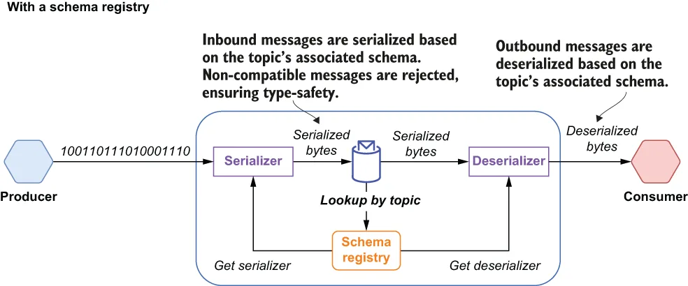
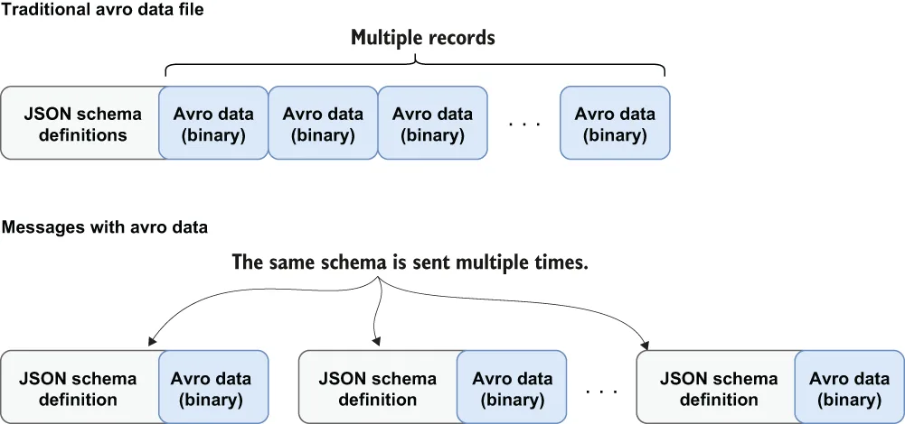

By default, Pulsar uses the Apache BookKeeper table service for schema storage, since it provides durable, replicated storage that ensures the schema data is not lost. It also provides the added benefit of a convenient key/value API. Since Pulsar schemas are applied and enforced at the topic level, the topic name is used as the key, and the values are represented by a data structure known as SchemaInfo that consists of the fields shown in the following listing.
默认情况下，Pulsar 使用 Apache BookKeeper 的 table service 来存储 schema，因为它提供持久且多副本的存储，能确保 schema 数据不会丢失。它还带来一个额外的好处：提供了便利的键/值 API。由于 Pulsar 的 schema 是在主题级别施加和强制执行的，因此主题名被用作键，而值则由一种名为 SchemaInfo 的数据结构来表示，它包含下面清单中所示的各个字段。
Listing 7.1 A Pulsar SchemaInfo example
{
“name”: “my-namespace/my-topic”, ❶
“type”: “STRING”, ❷
“schema”: “”, ❸
“properties”: {} ❹
}
❶ A unique name, which should match the topic name that the schema is associated with
❶ 一个唯一的名称，它应当与该 schema 所关联的主题名一致。
❷ Will either be one of the predefined schema types, such as STRING or struct, if you are using a generic serialization library, such as Apache Avro or JSON
❷ 如果你使用的是通用序列化库（例如 Apache Avro 或 JSON），这里会是 struct；否则会是某个预定义的 schema 类型，例如 STRING。
❸ If you are using a supported serialization type, such as Avro, then this will contain the raw schema data.
❸ 如果你使用的是受支持的序列化类型（例如 Avro），那么这里会包含原始的 schema 数据。
❹ A collection of user-defined properties
❹ 一组用户自定义属性。
As you can see in figure 7.3, a Pulsar client relies on the schema registry to get the schema associated with the topic it is connected to and invoke the associated serializer/ deserializer to transform the bytes into the appropriate type. This alleviates the consumer code from the responsibility of having to do the transformation and allows it to focus on the business logic.
如图 7.3 所示，Pulsar 客户端依赖 schema registry 来获取它所连接主题所关联的 schema，并调用相应的序列化器/反序列化器把字节转换成恰当的类型。这就把做转换的责任从消费者代码中卸了下来，让它能够专注于业务逻辑。

Figure 7.3 The Pulsar schema registry is used to serialize the bytes before they are published to a topic and to deserialize them before they are delivered to the consumers.
图 7.3 Pulsar schema registry 用于在字节发布到主题之前对其进行序列化，并在字节投递给消费者之前对其进行反序列化。
The schema registry uses the values of the type and schema fields to determine how to serialize and de-serialize the bytes contained inside the message body. The Pulsar schema registry supports a variety of schema types, which can be categorized as either primitive types or complex types. The type field is used to specify which of these categories the topic schema falls into.
schema registry 使用 type 和 schema 这两个字段的值，来决定如何对消息体中所含的字节进行序列化和反序列化。Pulsar schema registry 支持多种 schema 类型，它们可以被归为基本（primitive）类型或复杂（complex）类型两大类。type 字段则用来指明该主题的 schema 属于其中哪一类。
Primitive types
基本类型
Currently, Pulsar provides several primitive schema types, such as BOOLEAN, BYTES, FLOAT, STRING, and TIMESTAMP, just to name a few. If the type field contains the name of one of these predefined schema types, then the message bytes will be automatically serialized/deserialized into the corresponding programming language-specific type, as shown in table 7.1.
目前 Pulsar 提供了若干种基本 schema 类型，例如 BOOLEAN、BYTES、FLOAT、STRING 和 TIMESTAMP 等等，这里仅举几例。如果 type 字段中包含的是这些预定义 schema 类型之一的名称，那么消息字节就会被自动序列化/反序列化为对应的编程语言特定类型，如表 7.1 所示。
Table 7.1 Pulsar primitive types
| BOOLEAN | A single binary value: 0 = false, 1 = true |
| INT8 | An 8-bit signed integer |
| INT16 | A 16-bit signed integer |
| INT32 | A 32-bit signed integer |
| INT64 | A 64-bit signed integer |
| FLOAT | A 32-bit, single precision floating point number (IEEE 754) |
| DOUBLE | A 64-bit, double precision floating point number (IEEE 754) |
| BYTES | A sequence of 8-bit unsigned bytes |
| STRING | A Unicode character sequence |
| TIMESTAMP | The number of milliseconds since Jan 1, 1970 stored as an INT64 value |
表 7.1 Pulsar 基本类型
| BOOLEAN | 单个二进制值：0 = false，1 = true |
| INT8 | 8 位有符号整数 |
| INT16 | 16 位有符号整数 |
| INT32 | 32 位有符号整数 |
| INT64 | 64 位有符号整数 |
| FLOAT | 32 位单精度浮点数（IEEE 754） |
| DOUBLE | 64 位双精度浮点数（IEEE 754） |
| BYTES | 由 8 位无符号字节组成的序列 |
| STRING | Unicode 字符序列 |
| TIMESTAMP | 自 1970 年 1 月 1 日起经过的毫秒数，以 INT64 值存储 |
For primitive types, Pulsar does not require or use any data in the schema field because the schema is already implied and, thus, is not necessary.
对于基本类型，Pulsar 既不要求也不使用 schema 字段中的任何数据——因为 schema 已经隐含在其中了，因此也就没有必要。
Complex types
复杂类型
When your messages require a more complex type, you should use one of generic serialization libraries supported by Pulsar, such as Avro, JSON, or protobuf. This would be denoted with an empty string in the type field of the SchemaInfo object associated with the topic, and the schema field will contain a UTF-8 encoded JSON string of the schema definition. Let’s consider how this is applied to an Apache Avro schema definition to better illustrate how the Schema registry simplifies the process.
当你的消息需要更复杂的类型时，你应当使用 Pulsar 所支持的某个通用序列化库，例如 Avro、JSON 或 protobuf。这种情况在该主题所关联的 SchemaInfo 对象的 type 字段中以空字符串来表示，而 schema 字段中将包含该 schema 定义的 UTF-8 编码 JSON 字符串。我们来看看这种机制是如何应用到一份 Apache Avro schema 定义上的，以便更好地说明 schema registry 是如何简化这一过程的。
Apache Avro is a data serialization format that supports the definition of complex data types via language-independent schema definitions in JSON. Avro data is serialized into a compact binary data format that can only be read using the schema that was used when writing it. Since Avro requires that readers have access to the original writer schema in order to deserialize the binary data, the associated schema is typically stored with it at the beginning of the file. Avro was originally intended to be used for storing files with a large number of records of the same type, which allowed you to store the schema once and reuse it as you iterated through the records.
Apache Avro 是一种数据序列化格式，它通过 JSON 中语言无关的 schema 定义来支持复杂数据类型的定义。Avro 数据被序列化成一种紧凑的二进制格式，只能使用当初写入它时所用的那份 schema 来读取。由于 Avro 要求读取方能拿到原始的写入方 schema 才能反序列化那些二进制数据，相关的 schema 通常会和数据一起存放在文件的开头。Avro 最初的设计意图是用于存储包含大量同类型记录的文件，这样你只需存一次 schema，然后在遍历各条记录时反复复用它。

Figure 7.4 Avro messages would require the associated schema to be included with every message to ensure you could parse the binary message contents.
图 7.4 若采用 Avro，每条消息都必须附带与之关联的 schema，才能确保你能解析出其中的二进制消息内容。
However, in a messaging use case, the schema would have to be sent with every single message, as shown in figure 7.4. Including the schema inside every Pulsar message would be inefficient in terms of memory, network bandwidth, and disk space. This is where Pulsar’s schema registry comes in. When you register a typed producer or consumer that uses an Avro schema, the JSON representation of the Avro schema is stored inside the schema field of the associated SchemaInfo object. The raw bytes of the messages are then serialized or deserialized based upon the Avro schema definition stored inside the Schema registry, as shown in figure 7.3. This eliminates the need to include it with every single message. Furthermore, the corresponding serializer or deserializer is cached inside the producers/consumers, so it can be used on all subsequent messages until a different schema version is encountered.
然而，在消息场景中，schema 就不得不随每一条消息一起发送了，如图 7.4 所示。把 schema 塞进每一条 Pulsar 消息里，在内存、网络带宽和磁盘空间三个方面都是低效的。这正是 Pulsar schema registry 的用武之地。当你注册一个使用 Avro schema 的带类型生产者或消费者时，该 Avro schema 的 JSON 表示会被存入相应 SchemaInfo 对象的 schema 字段中。随后，消息的原始字节就依据存放在 schema registry 中的那份 Avro schema 定义来进行序列化或反序列化，如图 7.3 所示。这就免除了把 schema 随每条消息一起发送的必要。此外，相应的序列化器或反序列化器会被缓存在生产者/消费者内部，因此在遇到不同的 schema 版本之前，后续所有消息都可以复用它。